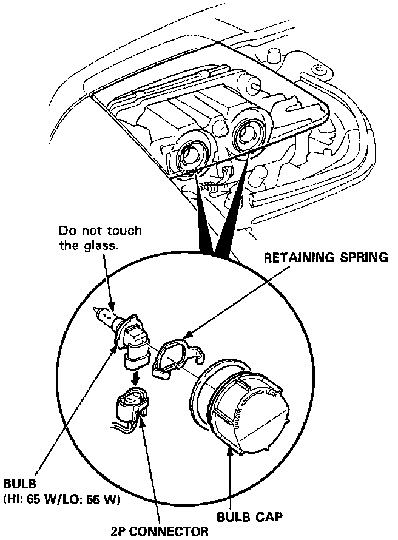

Headlamp Bulb: Service and Repair
CAUTION:- Halogen headlights can become very hot in use; do not touch them or the attaching hardware immediately after they have been turned OFF.
- Do not try to replace or clean the headlights with the lights ON.
Headlights-Bulb Replacement:

1. Remove the bulb cap.
2. Disconnect the 2P connector, then remove the retaining spring and bulb.